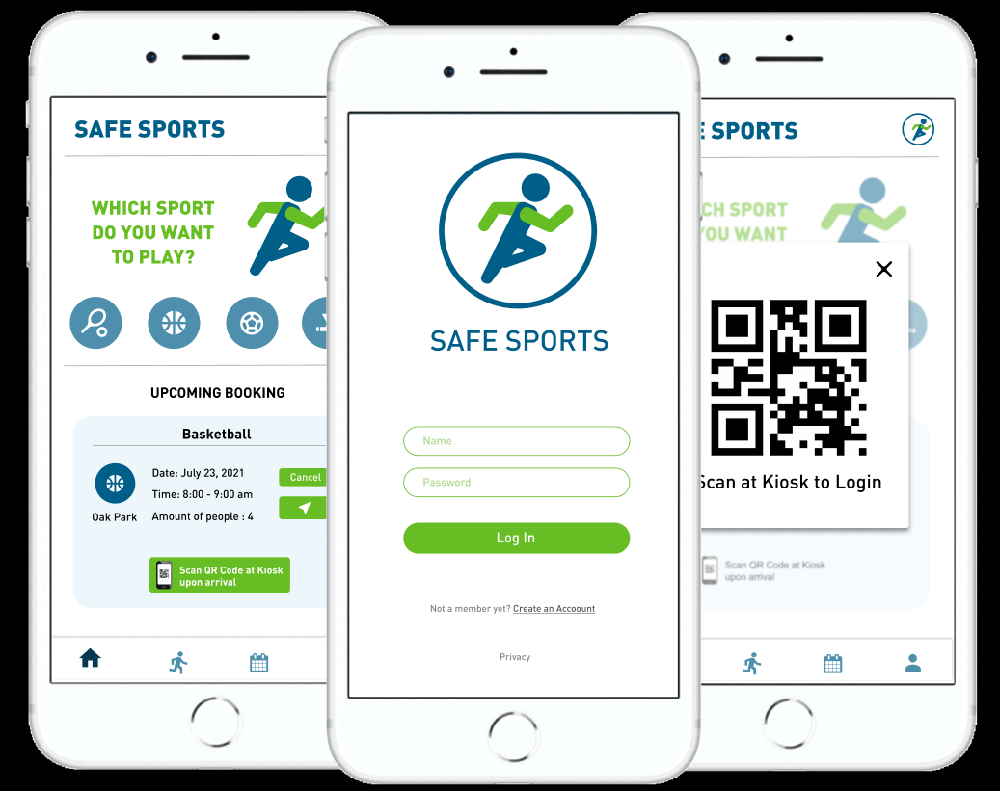
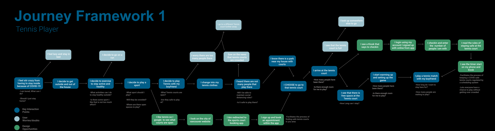
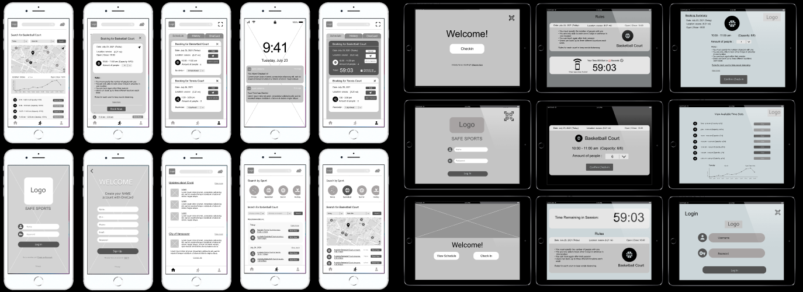
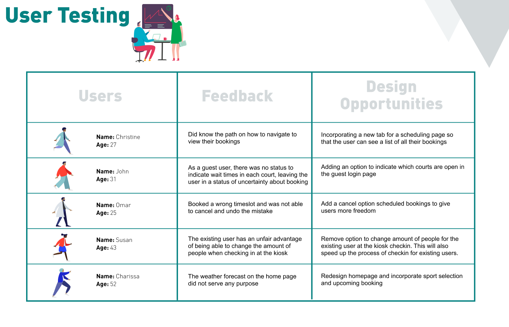
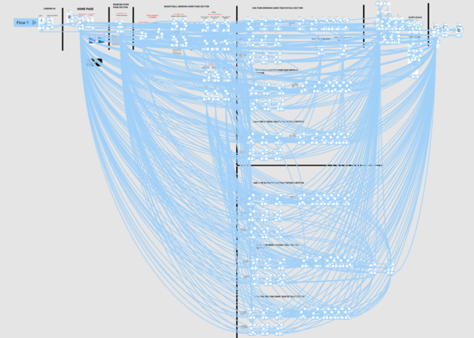
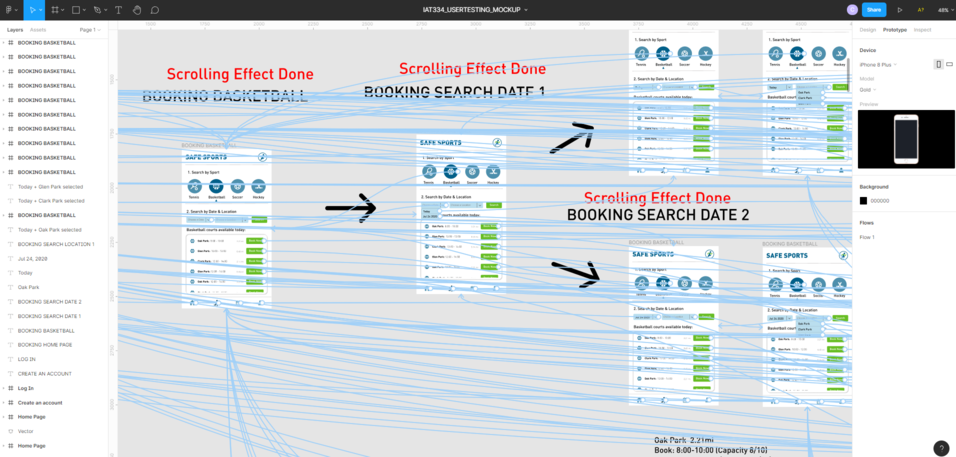

Description
Safe Sport was a mobile application and check-in kiosk interface designed in Figma as an academic project. The concept was thought of during the beginning of
the Covid-19 pandemic where Vancouver residents weren't given the opportunity to use outdoor facitilies due to the risk of spreading the virus in close spaces.
The goal of the whole interface was to allow residents in the city of Vancouver to be able to reserve times to use public outdoor acitivity spaces during the
pandemic. The mobile application allowed users the chance to search through available outdoor facitilies in the city of Vancouver such as basketball and tennis
courts, then book a time and set the number of people that will be in your reservation to stay within Covid-19 gathering guidelines. A kiosk check-in system concept
was thought of to be placed in each outdoor facility to ensure that residents that booked the time slot to use an outdoor facility gets access
to it in whille following Covid-19 covid protocols.
Team & Roles
Zoe Dao-Kroeker
Interface Designer
Jenny Chen
Interface Designer
Pradeesh Motha
Interface Designer
Chamira Perera
Interface Designer
Tools Used
Figma
Premier Pro
Duration
6 weeks
(JUL - AUG 2020)
The first thing that was done was creating journey map frameworks of how a Vancouver resident would possibly use the system to book an outdoor facility such as
a tennis court. The jouney map outlined how a Vancouver resident would go about wanting to use an outdoor tennis court in Vancouver, then taking the appropriate
steps to book a reservation at the facility, arrriving and checking in to the facility, theen using the time that had been reserved while still adhering to Covid-19
guidelines.

Journey Map of Tennis player in Vancouver's steps to use outdoor facility
Wireframe and Interface Design

Wireframe of Mobile app and Kiosk Interface
Once that framework was laid out the Wireframe for each part of the system was designed which was the kiosk and mobile application. The mobile app layout
was designed to allow users to search outdoor sports facilities based on sport or location. The app also gave different information about the city such as the weather or
how far different outdoor facilities were away from a user's location. The kiosk interface was then designed to allow users to book reservation times to use the outdoor facility
by drop in, or use the mobile app to check-in to the kiosk to use the space.
UI Research and Testing

Information/Feedback Provide by User Testing
Once the application and kiosk interface was completed, UI tests were done with participants to get feedback on the overall layout and flow off the applications.
From these tests and feedback changes were able to be made to make the interface a lot more smooth and streamline. These changes included updates to the interface to make
booking outdoor sports spaces more understandable and making the check-in with the kiosk easier to understand.
Challenges
The main challenge was creating an interactive interface using Figma's prototyping tool. This tool provided by Figma allows users to link different page elements to others
elements on other pages which allowed us to create an interface that had buttons and pages that could be interacted with in a prsentation mode. The main challenge was with
creating an interface this way, many connections between elements had to be made to have an interactive interface. The image shows all the connections that were made between
each page on the mobile application to show the scope of how many connections had to be made. It was a very time consuming procedure but produced a good interactive prototype.


Connections made between elements with Figma prototyping tool
Final Product
Overall this project provided insight on how to develop user interfaces and how to test them with participants in order to get feedback and improve on the overall design.
If more time was given to work on the interface more detail would've gone into making sure the entire application was interactive. However due to the number of connections
between elements that had already been made, for the purpose of prototyping the application was partially complete. Below provides access to both the kiosk and mobile application
interface for users to interact with.
Interactive Interfaces of the Mobile app and Kiosk